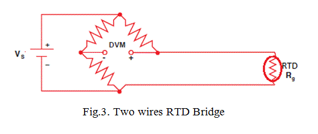
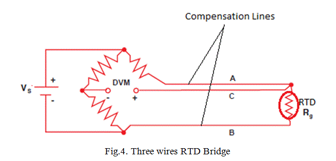
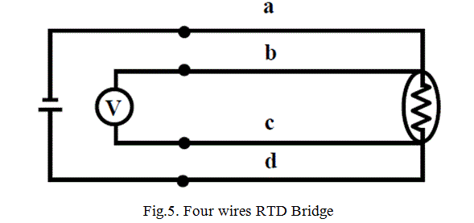
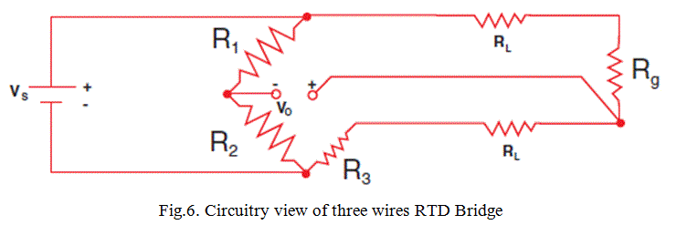
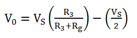
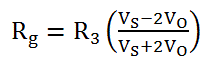
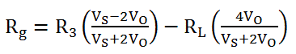

Signal Conditioning of RTD
Expressions for a Three Wires RTD Circuit
Limitations of RTD
A Resistance Thermometer or Resistance Temperature Detector is a device which used to determine the temperature by measuring the resistance of pure electrical wire. This wire is referred to as a temperature sensor. If we want to measure temperature with high accuracy, RTD is the only one solution in industries. It has good linear characteristics over a wide range of temperature.
The variation of resistance of the metal with the variation of the temperature is given as,
![R_t\; =\; R_0[1\;+\;\altha (t\; - \;t_0)\;+\;\beta(t\;- t_0)^2\;+\;\cdot\cdot\cdot\cdot\cdot\cdot\cdot\cdot]](1.png "R_t\; =\; R_0[1\;+\;\altha (t\; - \;t_0)\;+\;\beta(t\;- t_0)^2\;+\;\cdot\cdot\cdot\cdot\cdot\cdot\cdot\cdot]")
Where, Rt and R0 are the resistance values at t°C and t0°C temperatures.
α and β are the constants depends on the metals.
This expression is for huge range of temperature. For small range of temperature, the expression can be,
![R_t\; =\; R_0[1\;+\;\altha (t\; - \;t_0)]](2.png "R_t\; =\; R_0[1\;+\;\altha (t\; - \;t_0)]")
Fig.1. Resistance-temperature characteristics of metals
In RTD devices; Copper, Nickel and Platinum are widely used metals. These three metals are having different resistance variations with respective to the temperature variations. That is called resistance-temperature characteristics. Platinum has the temperature range of 650°C, and then the Copper and Nickel have 120°C and 300°C respectively. The figure-1 shows the resistance-temperature characteristics curve of the three different metals. For Platinum, its resistance changes by approximately 0.4 ohms per degree Celsius of temperature.
The purity of the platinum is checked by measuring R100 / R0. Because, whatever the materials actually we are using for making the RTD that should be pure. If it will not pure, it will deviate from the conventional resistance-temperature graph. So, α and β values will change depending upon the metals.
Construction of Resistance Temperature Detector or RTD
The construction is typically such that the wire is wound on a form (in a coil) on notched mica cross frame to achieve small size, improving the thermal conductivity to decrease the response time and a high rate of heat transfer is obtained. In the industrial RTD’s, the coil is protected by a stainless steel sheath or a protective tube.
So that, the physical strain is negligible as the wire expands and increase the length of wire with the temperature change. If the strain on the wire is increasing, then the tension increases. Due to that, the resistance of the wire will change which is undesirable.So, we don’t want to change the resistance of wire by any other unwanted changes except the temperature changes.
This is also useful to RTD maintenance while the plant is in operation. Mica is placed in between the steel sheath and resistance wire for better electrical insulation. Due less strain in resistance wire, it should be carefully wound over mica sheet. The fig.2 shows the structural view of an Industrial Resistance Temperature Detector.
Fig.2. Construction of industrial RTD
Signal Conditioning of RTD
We can get this RTD in market. But we must know the procedure how to use it and how to make the signal conditioning circuitry. So that, the lead wire errors and other calibration errors can be minimized.
In this RTD, the change in resistance value is very small with respect to the temperature. So, the RTD value is measured by using a bridge circuit. By supplying the constant electric current to the bridge circuit and measuring the resulting voltage drop across the resistor, the RTD resistance can be calculated. Thereby, the temperature can be also determined. This temperature is determined by converting the RTD resistance value using a calibration expression. The different modules of RTD are shown in below figures.



In two wires RTD Bridge, the dummy wire is absent. The output taken from the remaining two ends as shown in fig.3. But the extension wire resistances are very important to be considered, because the impedance of the extension wires may affect the temperature reading. This effect is minimizing in three wires RTD bridge circuit by connecting a dummy wire C. If wires A and B are matched properly in terms of length and cross section area, then their impedance effects will cancel because each wire is in opposite position. So that, the dummy wire C acts as a sense lead to measure the voltage drop across the RTD resistance and it carries no current. In these circuits, the output voltage is directly proportional to the temperature. So, we need one calibration equation to find the temperature.
Expressions for a Three Wires RTD Circuit

If we know the values of VS and VO, we can find Rg and then we can find the temperature value using calibration equation. Now, assume R1 = R2:

If R3 = Rg; then VO = 0 and the bridge is balanced. This can be done manually, but if we don’t want to do a manual calculation, we can just solve the equation 3 to get the expression for Rg.

This expression assumes, when the lead resistance RL = 0. Suppose, if RL is present in a situation, then the expression of Rg becomes,

So, there is an error in the RTD resistance value because of the RL resistance. That is why we need to compensated the RL resistance as we discussed already by connecting one dummy line ‘C’ as shown in fig.4.
Video Presentation on Resistance Temperature Detector or RTD
Limitations of RTD
In the RTD resistance, there will be an I2R power dissipation by the device itself that causes a slight heating effect. This is called as self-heating in RTD. This may also cause an erroneous reading. Thus, the electric current through the RTD resistance must be kept sufficiently low and constant to avoid self-heating.
 by
by